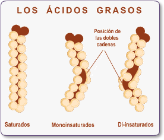
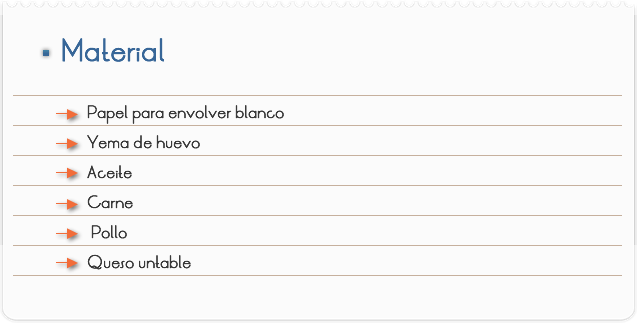
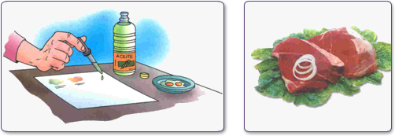

Introducción
La mayor proporción de la grasa que ingerimos está compuesta por triglicéridos, que se forman de la unión del glicerol, o glicerina, a la que están unidos tres ácidos grasos de cadena más o menos larga. En los alimentos que normalmente consumimos siempre nos encontramos con una combinación de ácidos grasos saturados e insaturados. Los ácidos grasos saturados son más difíciles de utilizar por el organismo, ya que sus posibilidades de combinarse con otras moléculas están limitadas por estar todos sus posibles puntos de enlace ya utilizados o "saturados". Entre los ácidos grasos insaturados se pueden distinguir los polinsaturados, con varios enlaces libres, de los mono insaturados, con sólo un enlace libre.

Las grasas de nuestra dieta también contienen vitaminas liposolubles (A, D y E) y sustancias como los fosfolípidos, que incluyen fósforo en sus moléculas. Entre otras cosas, forman las membranas de nuestras células y actúan como detergentes biológicos. Y no podemos olvidar al colesterol, sustancia indispensable en el metabolismo por formar parte de la zona intermedia de las membranas celulares, e intervenir en la síntesis de las hormonas, pero que tan malas pasadas nos juega cuando se encuentra en exceso.
Objetivo
Localizar grasa en los alimentos

- Para comprobar la presencia de grasa en alimentos:
1) Frotamos parte de ellos, o colocamos un poco sobre el papel de envolver blanco, si son líquidos.
2) Anotamos, debajo de la mancha, el nombre del alimento y lo dejamos secar.
3) A las 24 horas observamos el papel a trasluz.
Veremos que el alimento que contiene grasa deja una aureola transparente. Prueba con una yema de huevo, aceite, carne, pollo y queso untable.
RESULTADOS Y CONCLUSIONES
